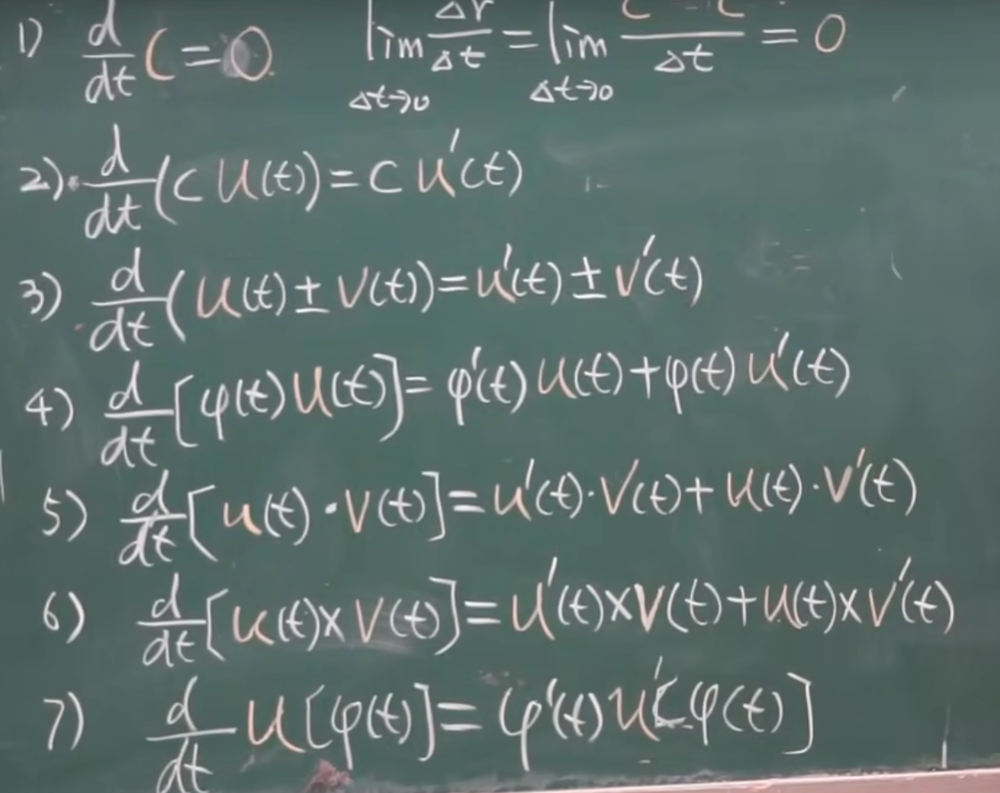
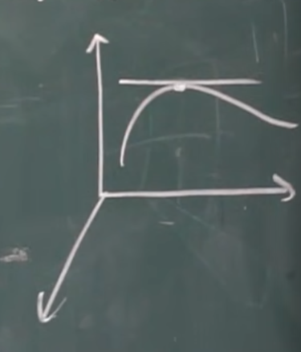
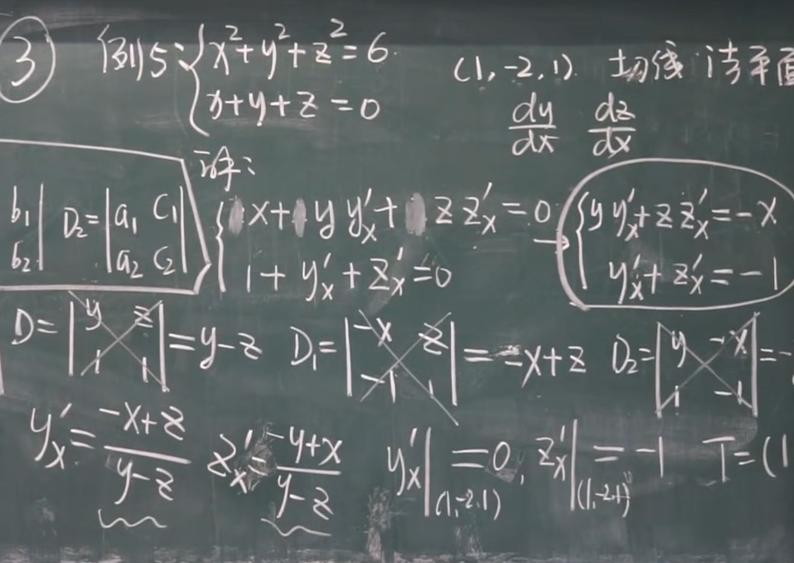
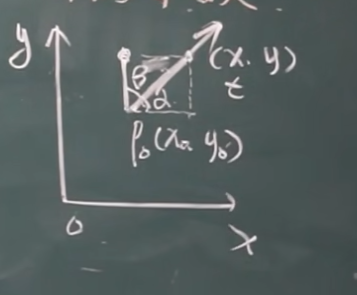
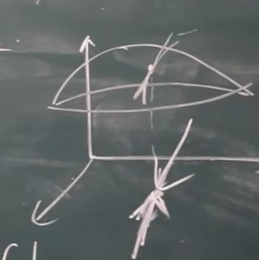
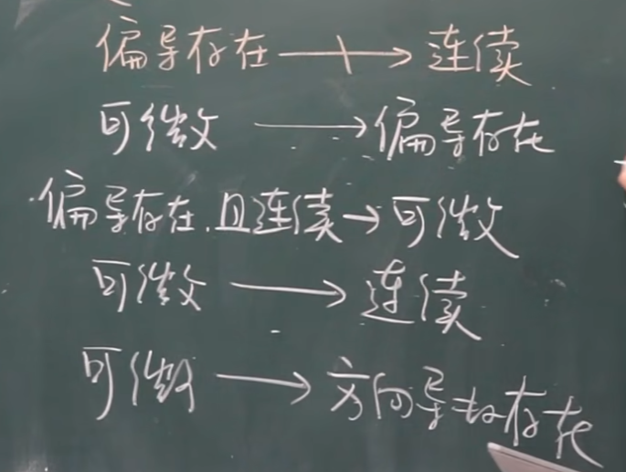

高等数学教程 （7）
高等数学教程（14）
一元向量值函数及其导数
定义
可以看到，我们对于空间点的坐标可以使用
这样的方式表达！
于是对于一个点，可以使用一个类似于函数的表达方式：
极限
定义：
当
下，我们可以记作：
导数
现在定义：
于是展开，可以得到：
相关求导法则
跟数量函数一致，我们来看：

空间曲线的切线与法平面

回到上面我们讲到的：一个空间曲线的切向量就是：
于是切线方程就是：
法平面：
对于方程式形式的，还是跟上一节的方程组求导一致

空间曲面的切平面和法线
1.$F(x,y,z)=0$
切平面：
法线：
2.$z=f(x,y)$
挪个位置：$F(x,y,z)=f(x,y)-z$
切平面：
法线：
方向导数
求方向导数，可以理解为曲面上的点$P(x_0,y_0)$出发的一条射线

我们出发产生的射线方程：
这个时候：
可以看作：F（x,y）在方向L上的偏导数！，方向导数这一节就是对偏导的推广！
但是，我们的方向导数是射线，是从一个方向逼近的，于是有：
方向导数存在，但是偏导未必因此存在！想要成为充要条件，则需要正负两个方向导数相等
定理：若函数$f(x,y)$在$(x_0,y_0)$可微，方向导数存在且$\frac{\partial f}{\partial l}|_{(x_0,y_0)}=f’_x\cos \alpha+f_y’\cos \beta $
关系整理

梯度
定义：
为梯度，他是个向量！
回到这里：
1)当$\theta=0$,此时方向导数最大，于是
梯度是在这一点方向导数取最大值的方向 2）当$\theta = \pi$,此时方向导数最小，为$|-gradf(x_0,y_0)|$
3)当$\theta = \frac{\pi}{2}$此时，方向导数为0，可以看作平行于等高线了！也可以理解为：在这个方向增长最快。
极大值（极小值）
定理一：极值必要条件：
$z=f(x,y)偏导，且(x_0,y_0)是极值点，则f’_x(x_0,y_0)=0,f’_y(x_0,y_0)=0$
驻点：$f’_x(x_0,y_0)=0,f’_y(x_0,y_0)=0$同时成立！
定理二：充分条件
$A=f’’_{xx}(x_0,y_0),B=f’’_{xy}(x_0,y_0),C=f’’_{yy}(x_0,y_0)$
则：
1）$AC>B^2$:极值，且$A>0是极小值，A<0是极大值$
2）$AC<B^2$:不是极值
3）$AC=B^2$:另作判断！
条件极值
什么叫条件极值，就是在一定约束之下函数的最大值，于是拉格朗日数乘就有：
实际上，我们常常直接构造拉格朗日函数：